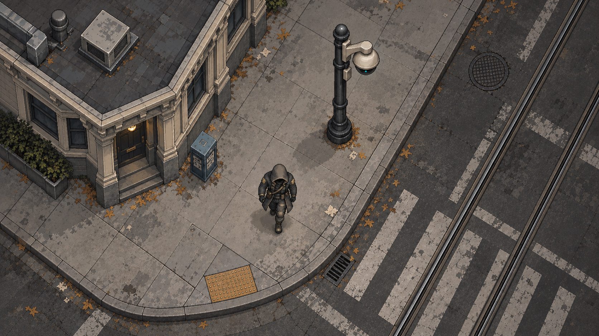
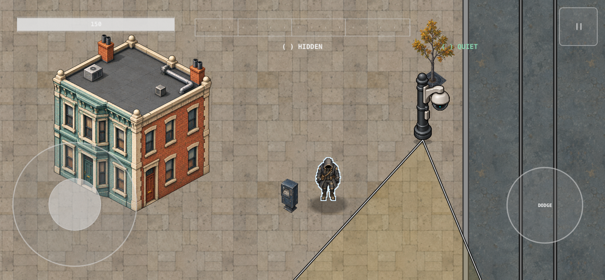
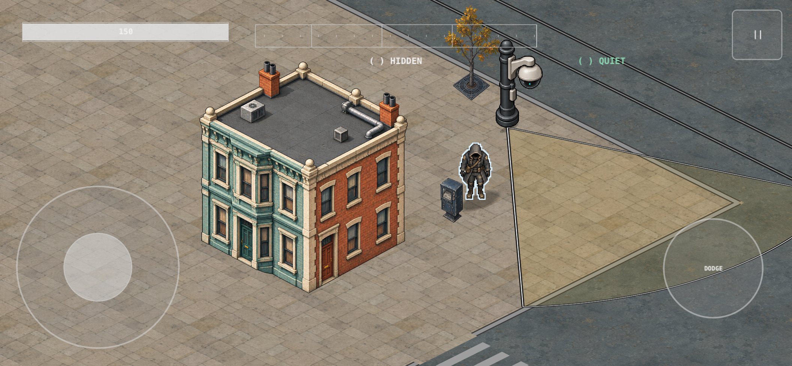
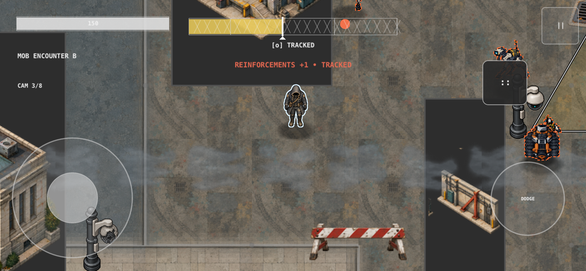
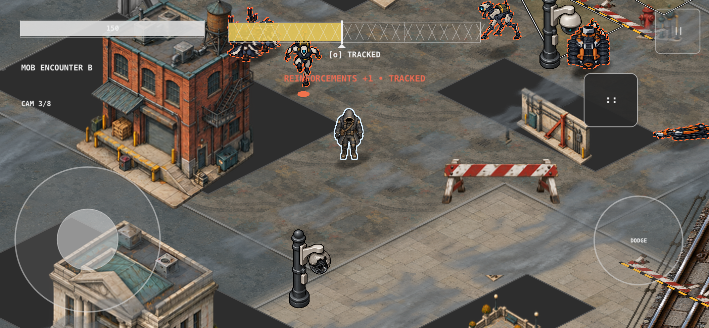

Choose a visual-source basis.
Not production readiness.
Compare A: current shipping ground mapping with B: the existing midpoint, 45° rotation then half-height ground, with upright same art. The question is which ground mapping should inform the next separately validated integration.
The shipping-ground control is not the exact approved concept reference projection. The concept illustrations below are reference only, separate from the controlled actual-renderer pairs.
Reference only / concept illustrations
Unchanged SS-specs references. These are not runtime captures, not a same-art control pair and not geometry or input proof.
Approved original concept reference

Midpoint concept reference

Actual renderer / synchronized same-art pairs
Native · Normal geometry · both pairs synchronized
Viewport: 704×326 points. Native: 2112×978 pixels. Half: 1056×489 pixels (box downsample). Grayscale: native pixels, saturation 0. Plates fit the column, so screen size is not pixel-for-pixel. Select any image to open its corresponding full-color native plate, with the selected geometry, in a new tab.
01 / Quiet street
Uniform constrained building, street fixture, paired field, camera integrity 3. Building registration is the same in both plates.
A / Shipping-ground control
Current shipping mapping, same upright art.

B / Midpoint candidate
45° rotation, half-height ground. Upright same art.

02 / Legal-input encounter
Seed 1, Ghost Step autopilot, tick 4976. Seven enemies and eight cameras. registerServiceBuilding is false, preserving production building art. This paused legal-input snapshot is not input-policy validation.
A / Shipping-ground control
Current shipping mapping, same encounter snapshot.

B / Midpoint candidate
45° rotation, half-height ground. Upright same art.

What this evidence does and does not establish
- Static paused same snapshot: each A/B pair compares the same snapshot through the current renderer, not new art.
- Not motion/input/facing/dense/physical/admission proof. These stills do not establish animation quality, control behavior, facing correctness, dense-scene readability, physical alignment, or asset admission.
- Ground world-south reads down-right on midpoint. Inverse input/facing policy needs separately validated integration before any production mapping decision.
- Geometry overlay: magenta strokes show solid rectangles, cyan shows the player body circle. Shipping keeps rectangles axis-aligned. Midpoint maps their corners into diamonds and the circle into an ellipse. Encounter midpoint strokes are in scene space above actors.
- All 24 comparison images byte-match fresh attachments from the same full Debug xcresult, iPhone 17 Pro Simulator, iOS 26.5. That run passed 166 logical tests with zero failures/skips. These are paused comparisons, not motion acceptance.
BP-011 / palette drift remains
Reference luminance/chroma: 85.2 / 11.4. Quiet A: 126.8 / 25.2, quiet B: 127.2 / 25.7, both flagged. Encounter A: 94.4 / 12.8, encounter B: 99.3 / 16.0, both within proposed bands. Projection does not fix quiet-scene palette drift.
Natural plates only. Top 240 native pixel rows (80 viewport points) excluded, lower touch controls retained, reference uncropped, no zone allowance. Flags are review prompts, not rejection. Within-band is not acceptance. See the full report for nearest-colour shares.